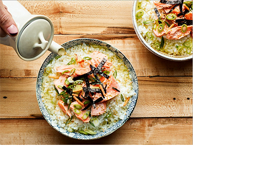
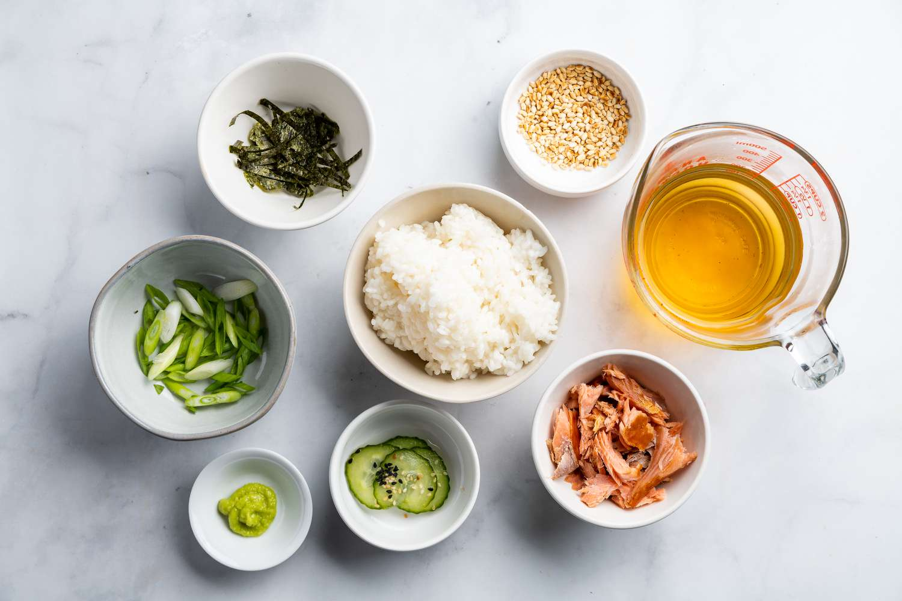
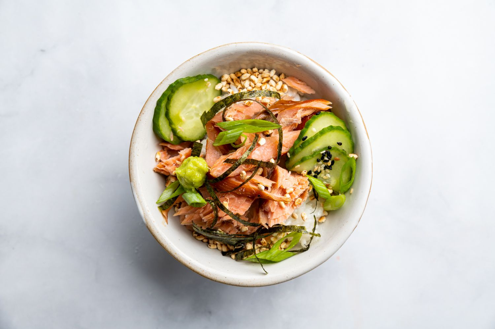
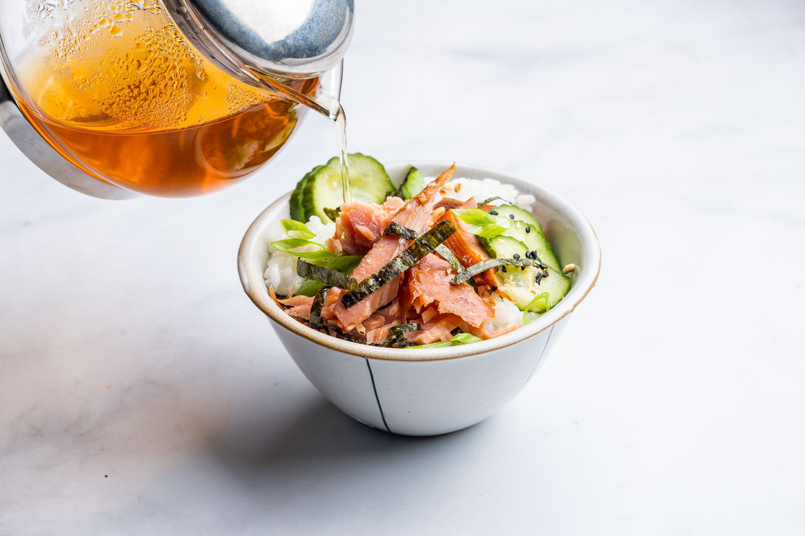

Ingredients
- 1 cup Dashi
- 1/2 cup green tea
- 1 teaspoon sake
- 1 teaspoon white tamari
- 2 teaspoons soy sauce
- 1 cup cooked rice
- 2 oz broiled salmon
- 1 umeboshi, rough chopped
- 2 teaspoons sliced scallions
- Furikake, to taste
Salmon Ochazuke
Ochazuke (お茶漬け) is the ultimate Japanese comfort food - Ocha refers to green tea, and zuke means “submerged.” Ochazuke is a simple one-bowl dish featuring steamed rice with an assortment of savory ingredients, partially steeped in green tea or dashi (Japanese soup stock).
Prep: 5 mins Cook: 5 mins Total: 10 mins
In a small saucepot combine the dashi, green tea, sake, mirin, white tamari and soy sauce and bring to a simmer.
In a small serving bowl big enough to hold the rice and broth, add the steamed rice and then pour over the dashi/tea broth combination.
Place the broiled salmon in the middle of the bowl, then the chopped umeboshi next to the salmon, and on the opposite side add the sliced scallions.
Sprinkle with furikake and enjoy!


